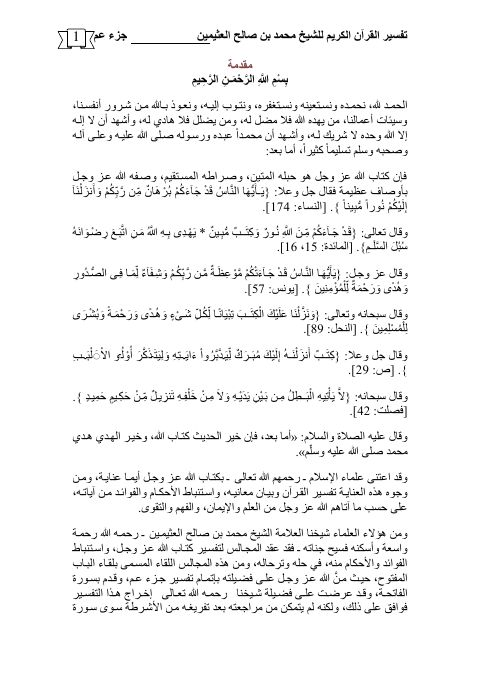

تفسير القرآن الكريم- جزء عمّّ
Authors: محمد بن صالح العثيمين
Download Downloads need an internet connection.
- Edition
- 1
- Volumes
- 1
- Pages
- 174
- Type
- كتاب
- Category
- التفسير وعلوم القرآن
Description
▫️ العنوان: تفسير القرآن الكريم- جزء عمّّ ▪️ المؤلف: #محمد_بن_صالح_العثيمين ▫️ الطبعة: 1 ▪️ عدد الأجزاء: 1 ▫️ الصفحات: 174 ▪️ نوع الوعاء: #كتاب ▫️ التصنيف الرئيسي: #التفسير_وعلوم_القرآن ۪